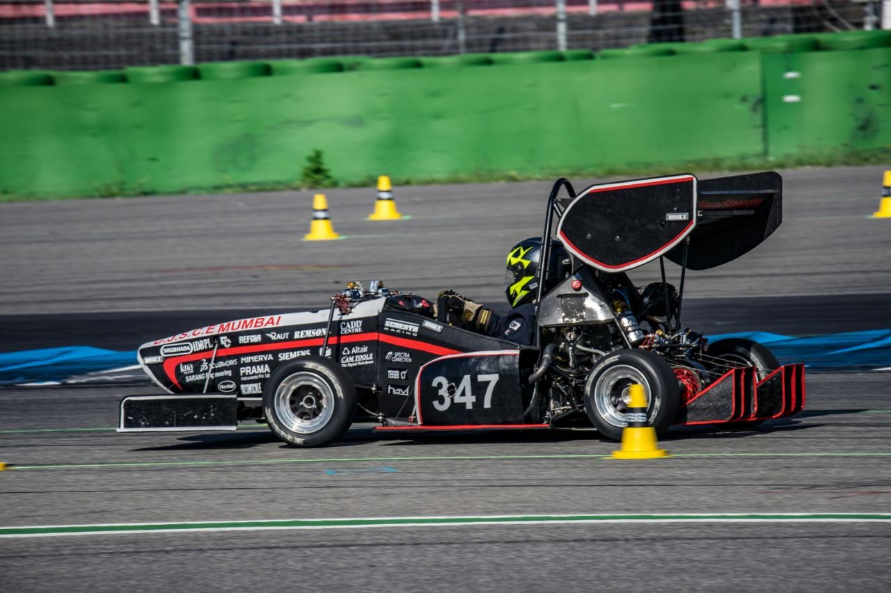

While college is the time where a lot of people misuse their newfound freedom , it is easy to forget the actual reason of attending the college. I understood that college is not only about what is taught in the classroom but rather way too much more. Hence considering my interests , I joined DJSRacing. To be honest I didnt expect much by participating in the team , however i was quickly proven wrong. It was so much more than just a team where we work tirelessly. It was a platform to learn about effective communication , team work , practical knowledge , time management and practical experience. I dedicated as much of my time to the team , sacrifing the late nights. Soon I rose to the rank of "DriveTrain Lead" in the team where I took certain major decisions about the team such as the motor selection. While holding the title I imparted all the knowledge that I had to my juniors as i believe that for improvement , the most efficient way is to build up on existing knowledge rather than starting from a scratch.

